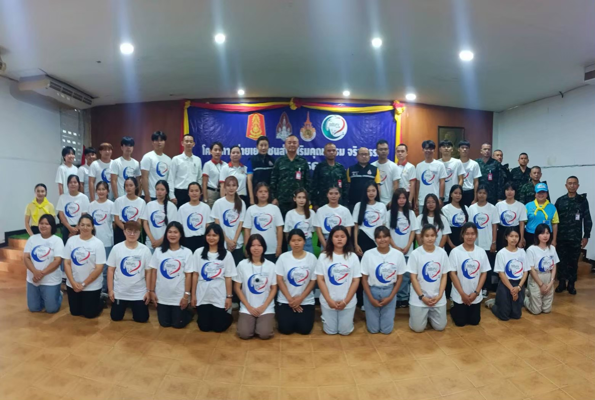
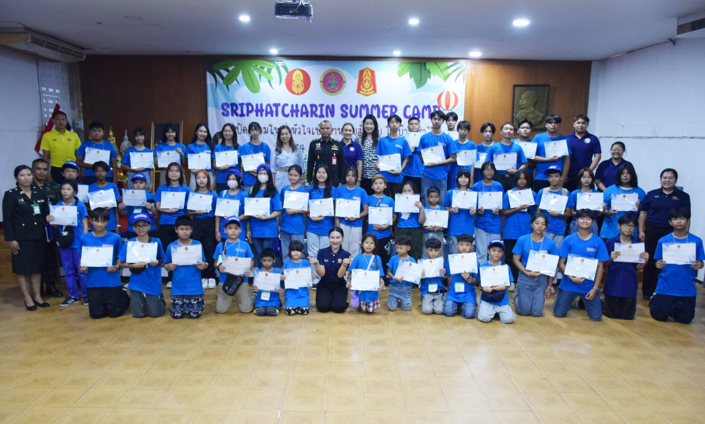
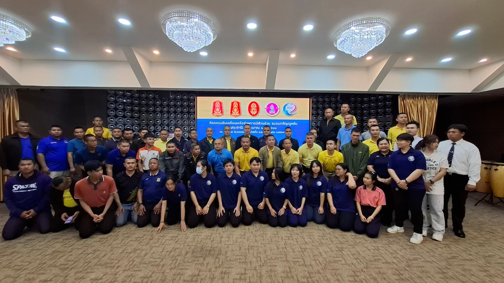
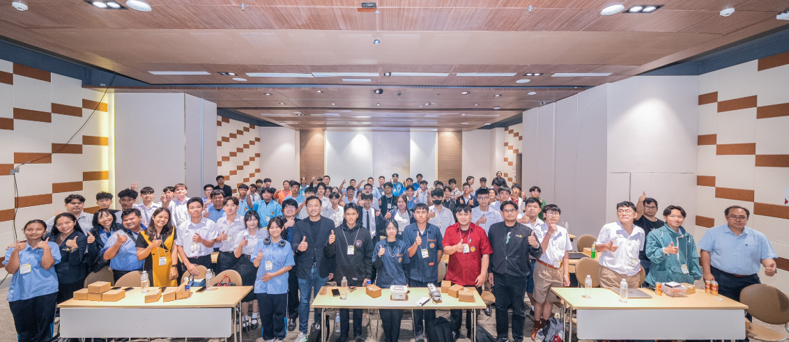
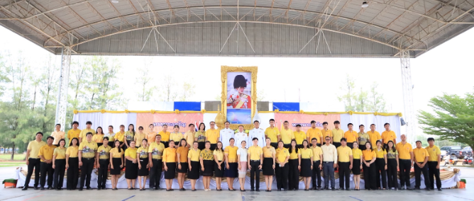
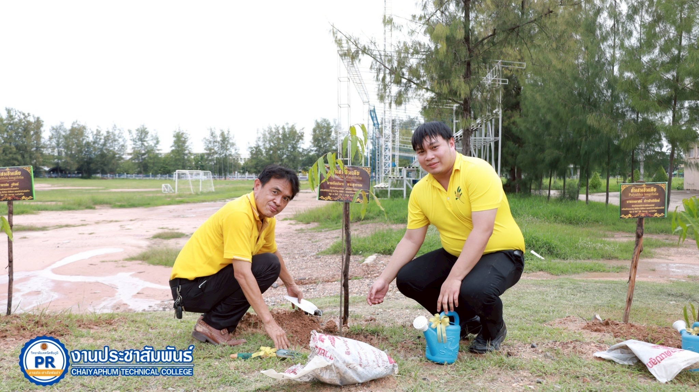
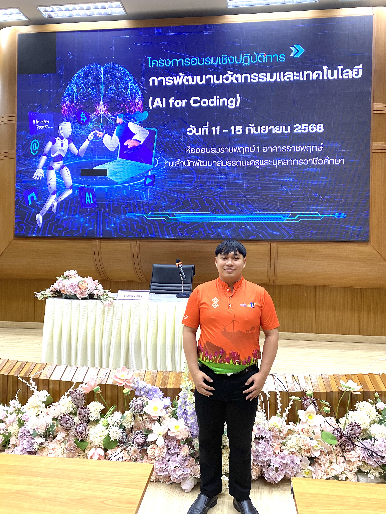
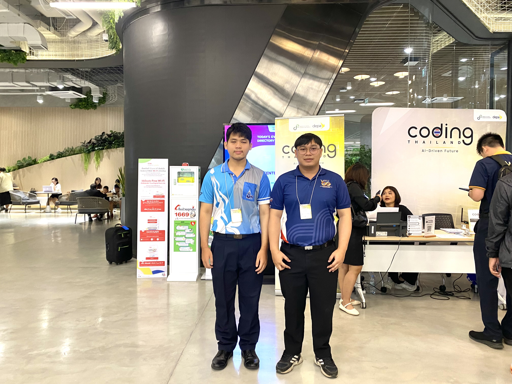
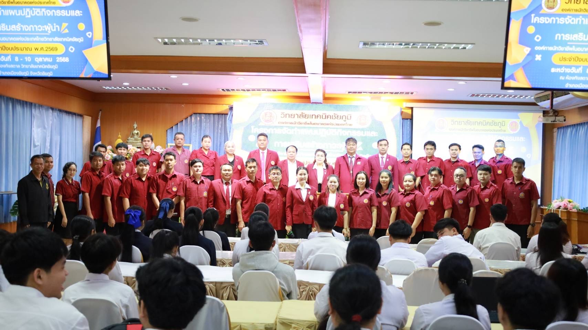

กิจกรรม ค่ายเยาวชนส่งเสริมคุณธรรม จริยธรรม
วันที่ 21 - 23 กรกฎาคม 2566 เข้าร่วมกิจกรรม ค่ายเยาวชนส่งเสริมคุณธรรม จริยธรรม
ดูรายละเอียดเพิ่มเติม
โครงการ SRIPHATCHARIN SUMMER CAMP
วันที่ 26 เมษายน 2567 ได้เป็นครูฝึกให้เยาวชนใน โครงการ SRIPHATCHARIN SUMMER CAMP
ดูรายละเอียดเพิ่มเติม
กิจกรรมขับเคลื่อนเครือข่ายการมีส่วนร่วม ชมรมกตัญญูคลับ
วันที่ 6 - 7 ธันวาคม 2567 ได้เข้าร่วมกิจกรรมขับเคลื่อนเครือข่ายการมีส่วนร่วม ชมรมกตัญญูคลับ
ดูรายละเอียดเพิ่มเติม
กิจกรรมส่งเสริมการเรียนรู้และพัฒนาทักษะดิจิทัลภายใต้โครงการ Codling Thailand 2025
วันที่ 30 มิ.ย. - 1 ก.ค. 2568 ได้เข้าร่วมกิจกรรมส่งเสริมการเรียนรู้และพัฒนาทักษะดิจิทัลภายใต้โครงการ Codling Thailand 2025
ดูรายละเอียดเพิ่มเติม
พิธีถวายเครื่องราชสักการะ พุ่มเงิน พุ่มทอง
วันที่ 25 กรกฎาคม 2568 ได้เข้าร่วมพิธีถวายเครื่องราชสักการะ พุ่มเงิน พุ่มทอง
ดูรายละเอียดเพิ่มเติม
กิจกรรมโครงการเสริมภาพลักษณ์อาชีวศึกษา อวท.จิตอาสา เราทำความดีด้วยหัวใจ
วันที่ 22 สิงหาคม 2568 ได้เข้าร่วมกิจกรรมโครงการเสริมภาพลักษณ์อาชีวศึกษา อวท.จิตอาสา เราทำความดีด้วยหัวใจ เฉลิมพระเกียรติพระบาทสมเด็จพระปรเมนทรรามาธิบดี ศรีสินทรมหาวชิราลงกรณ์ พระวชิรเกล้าเจ้าอยู่หัว
ดูรายละเอียดเพิ่มเติม
โครงการอบรมเชิงปฏิบัติการ การพัฒนานวัตกรรมและเทคโนโลยี (AI for Coding)
วันที่ 11 - 15 กันยายน 2568 ได้เข้าร่วมเข้าร่วมโครงการอบรมเชิงปฏิบัติการ การพัฒนานวัตกรรมและเทคโนโลยี (AI for Coding)
ดูรายละเอียดเพิ่มเติม
โครงการ Coding & AI Incubation
วันที่ 13 กันยายน 2568 นำนักศึกษาเข้าร่วมโครงการ Coding & AI Incubation กิจกรรมเสริมศักยภาพเข้มข้นให้พร้อมต่อยอดนวัตกรรมดิจิทัล
ดูรายละเอียดเพิ่มเติม
โครงการจัดทำแผนปฎิบัติกิจกรรมและการส่งเสริมสร้างภาวะผู้นำ
วันที่ 8 - 10 ตุลาคม 2568 ข้าร่วมโครงการจัดทำแผนปฎิบัติกิจกรรมและการส่งเสริมสร้างภาวะผู้นำ องค์การนักวิชาชีพแห่งประเทศไทยวิทยาลัยเทคนิคชัยภู,b
ดูรายละเอียดเพิ่มเติม.png)
กิจกรรมวันคริสต์มาสและวันขึ้นปีใหม่
วันที่ 24 ธันวาคม 2568 ได้เข้าร่วมกิจกรรมวันคริสต์มาสและวันขึ้นปีใหม่ และแลกของขวัญ ประจำปีการศึกษา 2568
ดูรายละเอียดเพิ่มเติม.png)
.png)